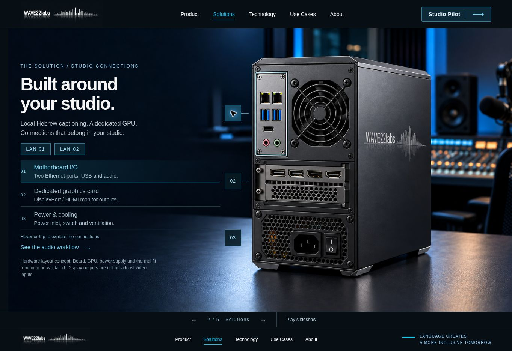
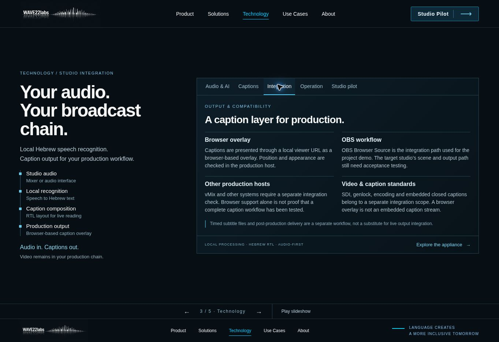
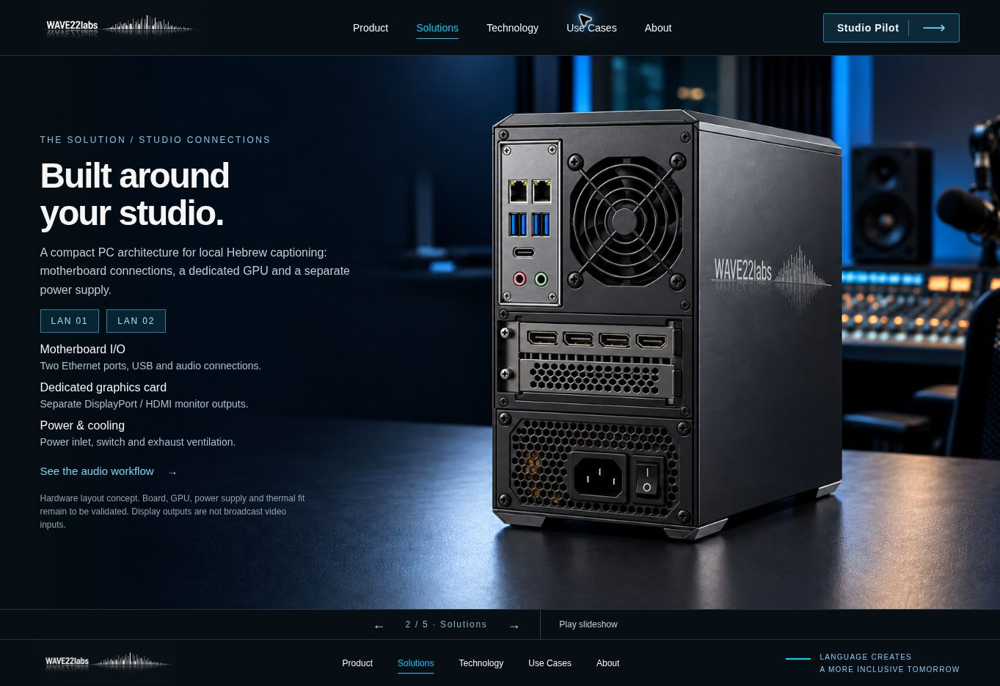
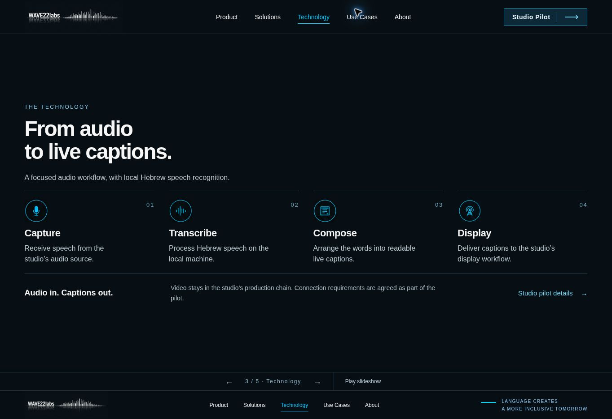

המטרה: לשמור על שפת האולפן המאושרת ולספק מידע שאפשר להעריך מבחינה תפעולית וטכנית, ללא הבטחות ביצועים מספריות.
| נושא | תיקון |
|---|---|
| קשר בין טקסט לחיבורים | נקודות אינטראקטיביות והדגשה תואמת של לוח האם, כרטיס המסך והחשמל. הנפשה חד־פעמית עדינה, עם תמיכה בהפחתת תנועה. |
| אמינות פאנל אחורי | מיקום נפרד ללוח אם, GPU וספק. שני חיבורי רשת בלוח האם משאירים את חריץ ההרחבה לכרטיס המסך. התמונה מסומנת כקונספט שדורש בדיקת התאמה. |
| דף טכנולוגיה כללי מדי | נבנה מחדש עם מסלול אודיו־לטקסט וחמש לשוניות: אודיו ועיבוד, כתוביות, אינטגרציה, תפעול ופיילוט. |
| ערבוב פלט תצוגה ויכולות שידור | הופרדו יציאות למסכים, שכבת דפדפן, SDI, סנכרון וכתוביות מוטמעות. לא נטענת תמיכה שלא אומתה. |
| מסך מחשב ומובייל | כל חמש הלשוניות נבדקו ב־1280×720 ללא גלילה. במובייל ברוחב תוכן 375 פיקסלים אין גלילה אופקית; התוכן נערם אנכית. |
נבדקו מעבר בכל הלשוניות, מקש Home, מצב aria-selected, בחירת חיבור והשוואת מצב הכפתור וההסבר, ניקוי בחירה ב־Escape ומעבר מקישור הפתרון לדף הטכנולוגיה. במובייל נבדקה בחירת אזור החשמל.
קוד מנוע התמלול העדכני לא היה נגיש בחיבור GitHub בזמן הבדיקה. התוכן מבוסס על הקשר הפרויקט והגבולות המתועדים; לא בוצע מבחן מערכת שידור, בדיקת חומרה פיזית או אימות ביצועים. OBS מתואר כנתיב הדמו של הפרויקט; vMix דורש בדיקה נפרדת. לוגים, שמירה, התאוששות, תמיכה ותצורת החומרה נסגרים במסגרת הפיילוט.




ASRock Rack — דוגמה ללוח עם שני חיבורי רשת · NVIDIA — יציאות תצוגה · OBS Browser Source · vMix Web Browser. המקורות מסבירים רכיבים ונתיבי שילוב אפשריים ואינם הוכחה לתאימות המוצר שלנו.